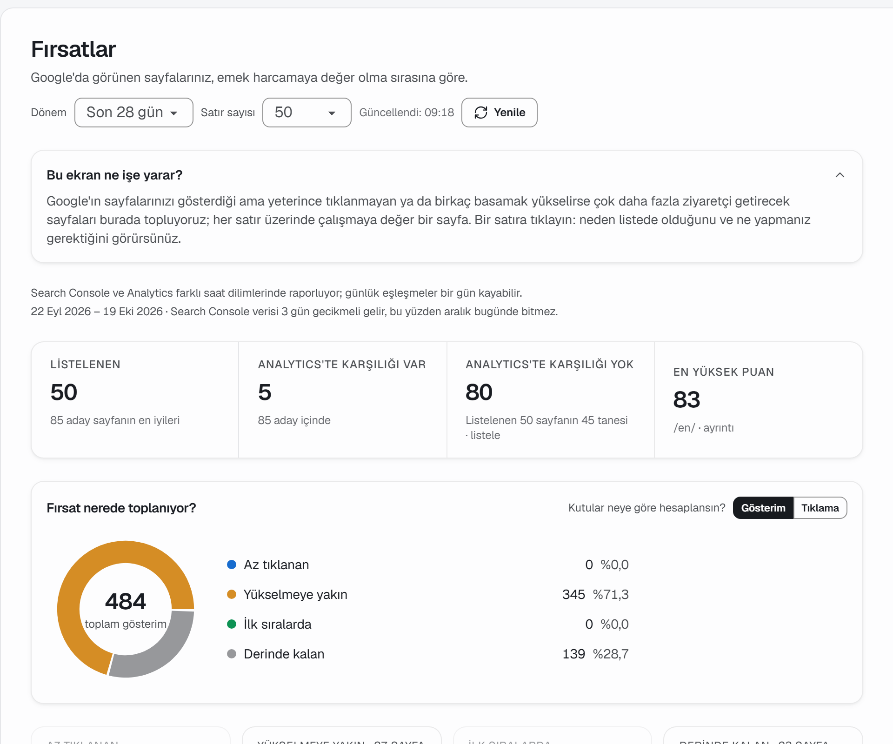
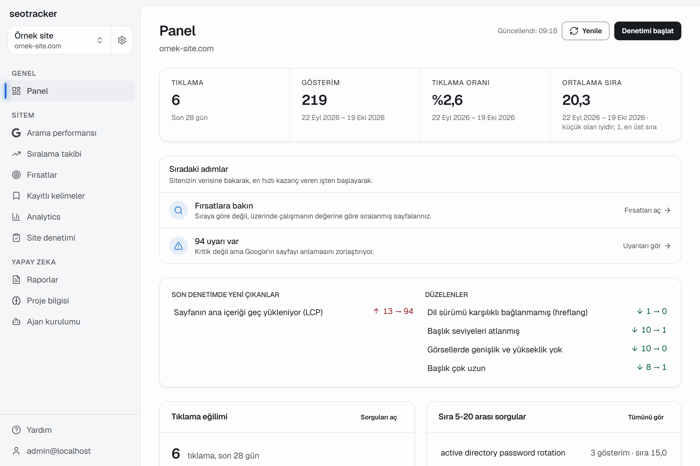
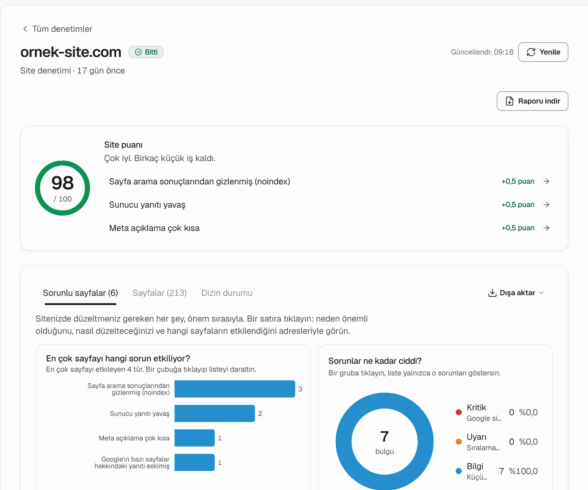
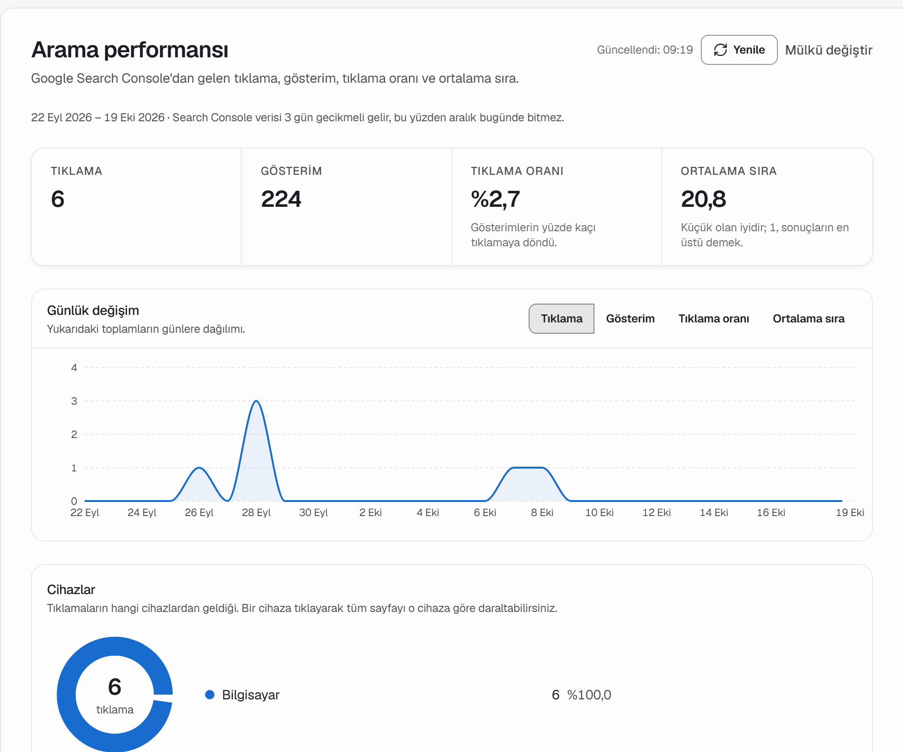
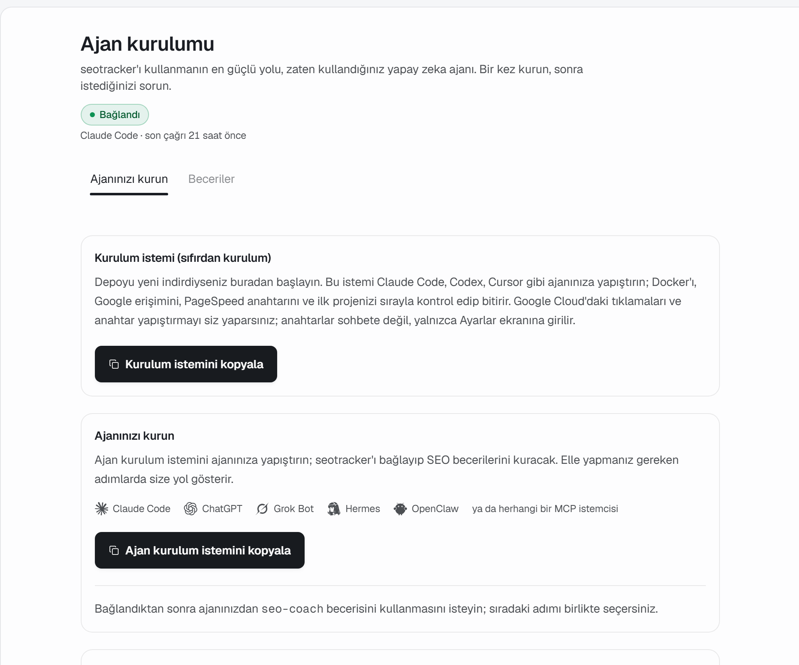

Fırsatlar
Search Console'daki her sorgu dört kümeye ayrılır: az tıklanan, yükselmeye yakın, ilk sıralarda, derinde kalan. Her sorgunun yanında onu taşıması gereken sayfa yazar.

Search Console, Analytics 4 ve site denetimi tek uygulamada. Ücretsiz, hesap açmadan; veriniz dışarı çıkmaz.
Windows 10 veya 11 yüklü bir bilgisayara kurulur. Telefondan bakıyorsanız bu sayfayı kendinize gönderin.

Görüntülerdeki site ve sayılar örnektir.
Search Console'daki her sorgu dört kümeye ayrılır: az tıklanan, yükselmeye yakın, ilk sıralarda, derinde kalan. Her sorgunun yanında onu taşıması gereken sayfa yazar.

Uygulama siteyi sayfa sayfa gezer ve 95 kuralla bakar: kırık bağlantı, canonical, hreflang, başlık uzunluğu, yapısal veri, hız. Her bulgunun altında ne yapılacağı yazar.

Tıklama, gösterim, tıklanma oranı ve ortalama sıra; sorguya, sayfaya, ülkeye ve cihaza göre. On altı aya kadar geriye gidersiniz.

Claude Code, Codex veya Cursor kullanıyorsanız uygulamanın verisini ona açabilirsiniz: denetim, düşüş incelemesi, aylık kontrol ve rapor için hazır beceriler var. Kurulum metni ekranda, tek kopyala. Kullanmıyorsanız hiçbir şey eksilmez.

Sorgular, sayfalar, sıralar, dizin durumu ve site haritası. Google'ın size verdiği gerçek sayılar, tahmin değil.
Organik ziyaretler, açılış sayfaları, anahtar olaylar ve ölçüm sağlığı: düşüş gerçek mi, yoksa etiket mi koptu?
Siteyi sayfa sayfa gezer; hız ölçümünü Google'ın PageSpeed servisinden alır. Üçüncü taraf veri satın almaz.
Uygulama yalnızca kendi bilgisayarınızdan erişilir. Dışarıya giden tek bağlantı Google'a yaptığınız bağlantıdır; Google erişim anahtarları diskte şifreli durur.
Uygulama kullanıcı klasörünüze kurulur, veritabanını
hazırlar ve tarayıcıda 127.0.0.1:3001 adresini
açar. Sonrasında görev çubuğundaki simgeden açıp
kapatırsınız.
En uzun adım bu: Google tarafında bir kerelik bir erişim anahtarı (OAuth istemcisi) oluşturmanız gerekir. Uygulama ekranda adım adım gösterir; anahtarı Ayarlar'a yapıştırırsınız, bir daha uğraşmazsınız.
Search Console mülkünüzü seçin. Panel, arama performansı, fırsatlar ve dizin durumu dolar; denetimi tek düğmeyle başlatırsınız.
%LOCALAPPDATA%\seowatcher klasöründe: veritabanı,
Google erişim anahtarlarını şifreleyen anahtar ve günlükler.
Uygulamayı kaldırmak bu klasöre dokunmaz; yedeklemek için
kopyalamanız yeter.